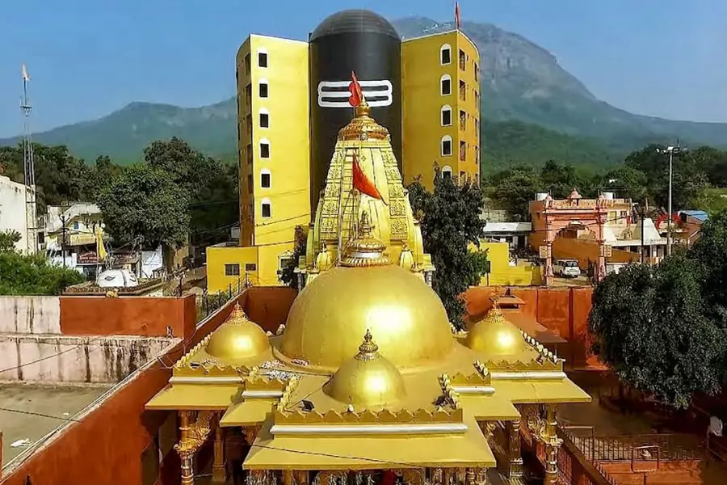

The Bhavnath Mahadev temple is a shrine ensconced in myths and legends of the Puranic era, at the base of Mount Girnar in Bhavnath village.
The Shiva ling here is said to have emerged of its own divine intention.
Reportedly, when Shiva and Parvati were traveling over the Girnar Hills their divine garment fell over the present Mrgi Kund, making this place an auspicious site for Lord Shiva worshipers.
Even today, the naga bavas [Naked sadhus] bathe in the holy Mrgi Kund before joining the Mahashivaratri procession.
The fair itself is so ancient that its precise origins are unknown.
Girnar Mountain, Bhavnath
There are two main annual festivals: Maha Shivaratri and Girnar Lili Parikrama.
The Bhavnath fair is a five-day occasion in the Magha month of the Hindu calendar, in the month of February-March, culminating with the most auspicious worship of God Shiva, at midnight of Maha Shivaratri, which is thronged by hundreds of Naga Sadhus of Dashanami Sampradaya, taking dip at Mrgi Kund and offering their prayers at the temple.
People believe that God Shiva himself visits the shrine here on this holiest day.
Devotees go around the holy hills of Girnar, before the fair.
Lakhs of pilgrims from Mewar, Kutch and Gujarat visit the temple at this time, as also foreign tourists, enchanted by the rosaries and sacred statues sold on stalls, by sellers from far Ayodhya and Mathura and elsewhere.
The whole place resounds with music and blowing of auspicious conch shells, tungis, and turis, with the Naga Sadhus on their elephants, holding Hindu religious flags in their hands, preceded by a decorated statue of Lord Dattatreya, in a palanquin.